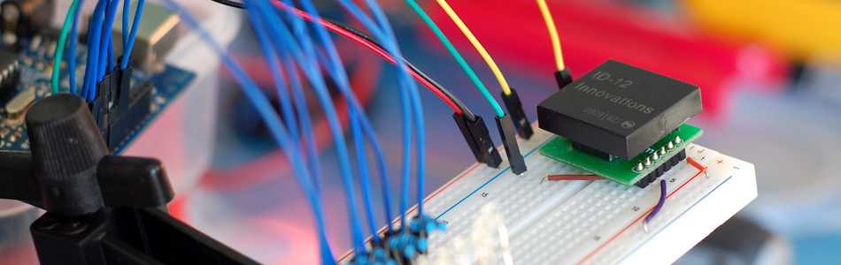

Can You ID This? ID-20 RFID Reader + Arduino

A few weeks ago we showed you how to control your arduino over serial. Well this week are going to do the same thing. Only this time instead of using the serial monitor to send the commands, we will be using the Innovations ID line RFID reader.
RFID, or Radio Frequency Identification, is basically a wireless barcode, and in this implementation works by a reader sending out a signal that powers a "tag", the RFID tag then responds with a unique 12 digit hex serial number. Because each tag sends back a unique number, it can be used as a semi-secure key system, or used to track individual objects.
The company Innovations, while they may have one of the worst sites I have seen in a while, makes some really easy-to-use and inexpensive RFID readers that are easily incorporated into your microcontroller project. The Innovations ID series of RFID readers come in 3 versions, the ID-2, ID-12, and ID-20. All 3 versions have the same pinout and work exactly the same. They all operate with common 125kHz Tags. In fact, the only difference is the antenna. The 2, has no antenna and requires an external one to work, the 12, a smaller antenna, and the 20, a larger antenna. While many other RFID readers offer USB connections, these require no computer to operate and simply send their data via 9600 baud serial which is easily read by your Arduino.
Operation
Hooking this guy is pretty simple, but note that the pins on these readers are not spaced properly for use with breadboard. Sparkfun does sell a board that will give you the .1in spacing needed to work with breadboard. If you do use the adapter board, just note that it changes the placement/ orientation of the pins, so it won't match the look of the illustration.
The readers also support connecting an LED or buzzer that will light/buzz when a tag is read (pin 10).

Sensing Tag Presence
With the way the reader is hooked up in the product's spec sheet, the reader will only scan a tag once, and will not rescan until the tag is moved out of, then back into range (watch the video below). But a lot of what I do with these requires knowing when a tag is present, not just when it was scanned. We can detect tag presence by connecting the reset pin (2) to the Arduino. Taking the reset pin LOW, then HIGH for at least 150ms will force the reader to rescan and re-post if a tag is present. So you can set a timer for 250ms, or so, and if the tag is not scanned during that time, you know the tag has been removed.
With how this is wired, Pin9 (Data 0) is going to output 9600 Baud serial every time it reads a tag, so we just connect this to Digital 0 (RX) on the Arduino. And... other than Ground, this is the only connection needed with the Arduino.
limitations
There are a few limitations I wanted to point out quickly. Sadly, the ID-2 / 12 /20 , as with most readers, can only read one tag at a time. In fact, having 2 or more tags in the readers range will cause it to not read any tags at all. So, if you need to detect the presence of many tags, you will need to figure out another way, get a different sensor, or buy a bunch of these. But... more than one reader right next to each other can cause none of them to work due to interference. You can wrap the bottom and sides with foil to help cancel the interference (be careful not to short the reader with the foil). Lastly, the range, even on the ID-20 is less than 4in real world. That means you can't easily use these for detecting finish times in a race or anything like that.
Code
OK... So now that this is all hooked up, we need some code to read the output. As I said, this outputs serial, and because it is serial, we will need to read the output one byte at a time. This makes the code a little more complicated than our previous tutorial, but because this is bildr, we have it all setup for you. We will store the sequence into a 13 byte char array. 12 of the bytes are for the tag characters, and the 13th byte is to store an end-of-line character. (It's just how it is done)
If you care, the tag outputs 16 bytes:
[start of text] - [12 bytes of hex] - [new line] - [carriage return] - [end of text]
We only need/want the 12 bytes that make up the tag. But we will use the rest to know what is the tag's start and end.
This code will read a tag, and if it is in the list, light up an LED corresponding to the tag. If the tag is not in the list, it will output it to the serial monitor so you can copy it and add it to the list.
int RFIDResetPin = 13; //Register your RFID tags here char tag1[13] = "1E009A4067A3"; char tag2[13] = "010230F28243"; char tag3[13] = "01023C013A04"; char tag4[13] = "01023101093A"; char tag5[13] = "01023C0A4376"; char tag6[13] = "01023C000E31"; char tag7[13] = "01023C0A3207"; char tag8[13] = "1A004116317C"; char tag9[13] = "1E009A81F9FC"; char tag10[13] = "1A004162261F"; void setup(){ Serial.begin(9600); pinMode(RFIDResetPin, OUTPUT); digitalWrite(RFIDResetPin, HIGH); //ONLY NEEDED IF CONTROLING THESE PINS - EG. LEDs pinMode(2, OUTPUT); pinMode(3, OUTPUT); pinMode(4, OUTPUT); pinMode(5, OUTPUT); pinMode(6, OUTPUT); pinMode(7, OUTPUT); pinMode(8, OUTPUT); pinMode(9, OUTPUT); pinMode(10, OUTPUT); pinMode(11, OUTPUT); } void loop(){ char tagString[13]; int index = 0; boolean reading = false; while(Serial.available()){ int readByte = Serial.read(); //read next available byte if(readByte == 2) reading = true; //begining of tag if(readByte == 3) reading = false; //end of tag if(reading && readByte != 2 && readByte != 10 && readByte != 13){ //store the tag tagString[index] = readByte; index ++; } } checkTag(tagString); //Check if it is a match clearTag(tagString); //Clear the char of all value resetReader(); //eset the RFID reader } void checkTag(char tag[]){ /////////////////////////////////// //Check the read tag against known tags /////////////////////////////////// if(strlen(tag) == 0) return; //empty, no need to contunue if(compareTag(tag, tag1)){ // if matched tag1, do this lightLED(2); }else if(compareTag(tag, tag2)){ //if matched tag2, do this lightLED(3); }else if(compareTag(tag, tag3)){ lightLED(4); }else if(compareTag(tag, tag4)){ lightLED(5); }else if(compareTag(tag, tag5)){ lightLED(6); }else if(compareTag(tag, tag6)){ lightLED(7); }else if(compareTag(tag, tag7)){ lightLED(8); }else if(compareTag(tag, tag8)){ lightLED(9); }else if(compareTag(tag, tag9)){ lightLED(10); }else if(compareTag(tag, tag10)){ lightLED(11); }else{ Serial.println(tag); //read out any unknown tag } } void lightLED(int pin){ /////////////////////////////////// //Turn on LED on pin "pin" for 250ms /////////////////////////////////// Serial.println(pin); digitalWrite(pin, HIGH); delay(250); digitalWrite(pin, LOW); } void resetReader(){ /////////////////////////////////// //Reset the RFID reader to read again. /////////////////////////////////// digitalWrite(RFIDResetPin, LOW); digitalWrite(RFIDResetPin, HIGH); delay(150); } void clearTag(char one[]){ /////////////////////////////////// //clear the char array by filling with null - ASCII 0 //Will think same tag has been read otherwise /////////////////////////////////// for(int i = 0; i < strlen(one); i++){ one[i] = 0; } } boolean compareTag(char one[], char two[]){ /////////////////////////////////// //compare two value to see if same, //strcmp not working 100% so we do this /////////////////////////////////// if(strlen(one) == 0) return false; //empty for(int i = 0; i < 12; i++){ if(one[i] != two[i]) return false; } return true; //no mismatches }
Extending this
Even though the Arduino Uno/Duemilanove only have one serial in port, using the cd74hc4067 multiplexer we talked about a few weeks ago you could connect 16 of these through one serial pin.
OK, so now you are able to scan and recognize RFID tags, but what to do with it? You can't just light up LEDs! What if you placed this under your door mat and placed a tag on your shoes so when you came inside, you would be greeted by a voice telling you the newest news?
You could also place RFID tags on snails and... OH wait, that has been done.
Whatever you do with this, we want to see it! And with these readers being so easy to use and extend, we think you will be doing some great things.
Article taken from bildr.org with minor changes - I am the original author of this content